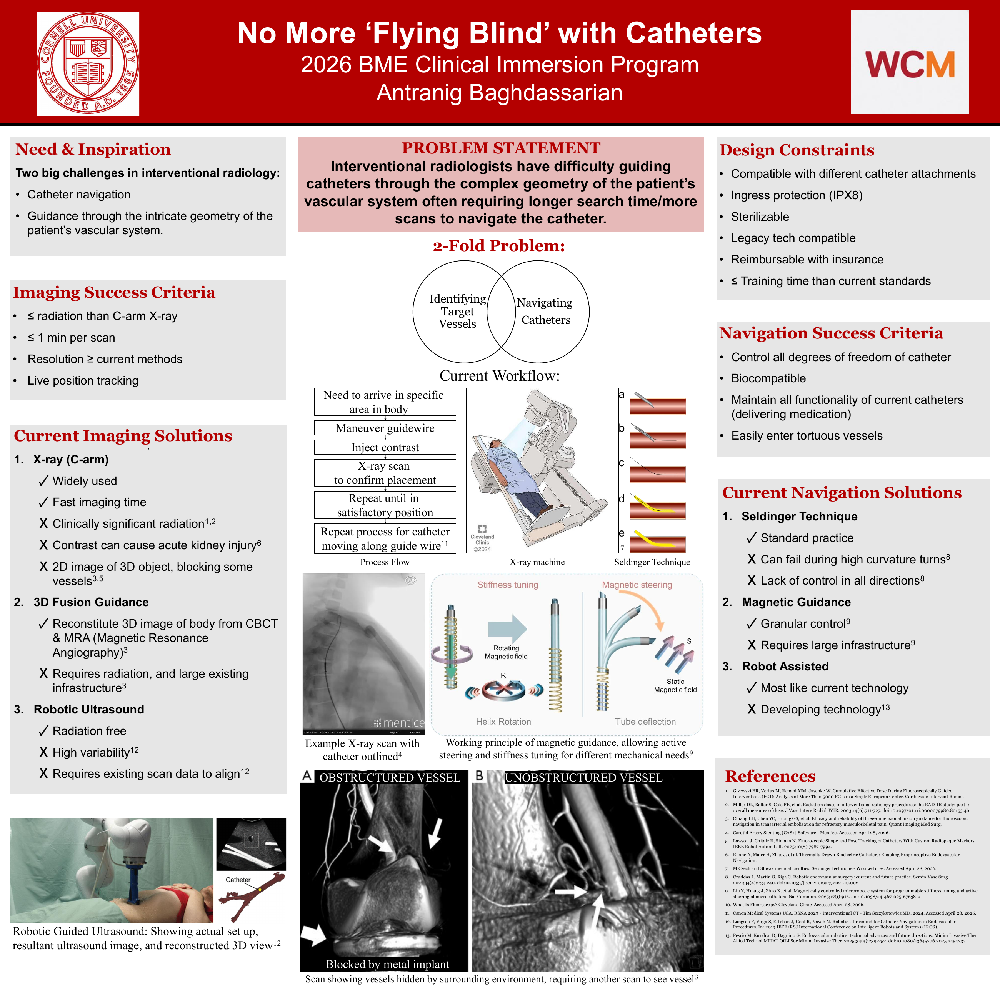
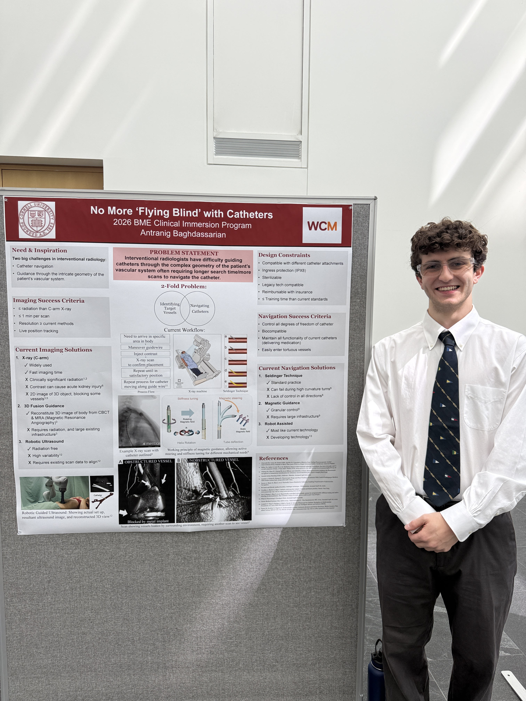

Clinical Immersion: Catheter Navigation
This project examines the challenges interventional radiologists face when guiding catheters through complex vascular geometry. The poster separates two connected needs: identifying target vessels and navigating catheters to them.

The clinical need
The current workflow can involve maneuvering a guidewire, injecting contrast, taking an X-ray scan to confirm placement, and repeating until the position is satisfactory. The poster compares existing imaging and navigation approaches, including C-arm X-ray, 3D fusion guidance, robotic ultrasound, the Seldinger technique, magnetic guidance, and robot assistance.
Design criteria
The imaging targets include live position tracking, scans taking no more than one minute, resolution at least comparable to current methods, and radiation exposure no greater than C-arm X-ray. Navigation targets include control over the catheter's degrees of freedom, biocompatibility, and maintaining its medication-delivery function.
The poster also identifies compatibility with existing catheter attachments and legacy technology, sterilizability, ingress protection, reimbursement, and training time as design constraints. These are proposed requirements, not demonstrated device capabilities.
My contribution
I carried out clinical observations and interviews, identified needs, researched existing approaches, and prepared and designed the poster. I completed this needs-finding project through the BME Clinical Immersion Program, a competitive opportunity over winter break of my junior year, in preparation for senior design.
Observations and what changed my thinking
An interventional radiologist mentioned that he couldn’t reach exactly where he needed to go because of the limitations of the technology. Hearing that helped me understand the catheter-navigation problem from the clinician’s perspective.
Proposed solution and next steps
The project concluded at problem finding, in preparation for the senior design capstone. The comparisons and design criteria on the poster help frame the problem. Building and validating a solution were outside the scope of this project.
Credits
Poster by Antranig Baghdassarian, 2026 BME Clinical Immersion Program. Sources for the comparison figures and clinical claims are listed on the poster.
